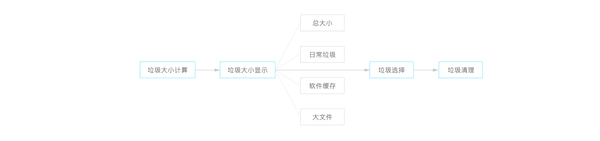

应用宝垃圾清理模块交互设计
设计任务
设计一个腾讯应用宝的 “垃圾清理” 模块的交互设计。
设计目的
一. 帮助用户快速了解垃圾大小及内容，减少用户的阅读负担，简化垃圾清理的操作，优化体验。
二. 通过手机加速的效果，帮助用户产生成就感，诱导用户增加打开该软件的频率，增加用户粘性。
设计焦点
一. 各项垃圾归拢，默认显示个大类垃圾信息，方便用户直观了解最需要的垃圾信息。用户可一次清理，不需要再进行二次清理。
二. 垃圾显示卡片化，以上滑方式可清理单项垃圾，增加垃圾清理的趣味性和成就感。总垃圾大小以进度条方式呈现，在垃圾清理的同时用户可直观地看到垃圾的减少，简单直接，亦可给用户带来垃圾清理的成就感。
流程设计
线框图设计
视觉设计
视觉设计元素与应用宝视觉保持一致性。